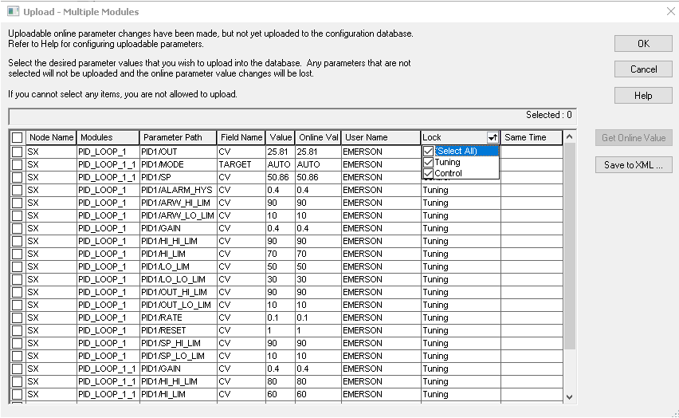

Uploading recorded parameter changes
You can change the parameter values in a module online (in a running controller) either through Control Studio or through DeltaV Operate or DeltaV Live. As soon as you make one change to a module online, the database module and the online module no longer match. You could examine the CHANGE records in Event Chronicle to find the changes that have been made, but there is an easier way to assess the online changes that have been made.
The configuration host workstation in your system monitors all recorded parameter changes (anything that would appear in any of the Event Chronicle databases in your system) and stores them in a temporary file. The Upload command opens the Upload dialog. This dialog lists recorded parameter changes. All columns can be sorted. The Lock column head enables you to filter the parameters by associated lock.

If you are uploading multiple modules, the dialog appears as shown. If you are uploading a single module, the dialog title includes the module name and the Node Name and Modules columns do not appear. The most recent value set for each parameter (and field) and the user who made the change appears in the list. If two or more changes were made to the same parameter and field within 250 milliseconds, the Same Time column includes a question mark (?).
The dialog includes the following buttons:
OK -- Click this button to upload any selected parameter changes before downloading and remove the temporary file containing parameter change information.
Cancel -- Click this button to close this dialog without uploading any parameter changes whether they are selected or not. The temporary file containing parameter changes is retained so subsequent download attempts open an Upload dialog that contains previous changes.
Get Online Value -- Click this button to retrieve the current parameter values from the node to which the selected parameters are assigned (this operation supports multi-select). The system displays the read values in the Online Value column of the dialog. This operation supports multi-select. The Online Value will be uploaded in the database if successfully retrieved.
Save to XML -- Click this button to generate an XML report that contains the information from the currently displayed dialog. The software displays the Save Parameters to XML dialog. If items were selected in the Upload dialog, you can choose to save only the selected items by clicking Save Selected at the bottom of the Save Parameters to XML dialog.
The present controller configuration, operating parameters, and I/O are not necessarily included in the upload process. Any parameter changes made by the control algorithms in the controller, as is done in SFC processing, are not included in the upload. You select which parameter values you want to write to the database modules. The Upload command is available in the DeltaV Explorer and in Control Studio.
Upload before download does not capture the present configuration and operating parameters in the controller. By default, only manual operator changes from the workstations are recorded. Any settings automatically performed by the controller are not included in the upload. Use the Get Online Value button to retrieve the current value of parameters online. Use with caution, major process interruption could result from using the upload feature if the specific implementation of the users' configuration is not taken into account.
When an upload operation is interrupted before it completes, the values that it uploads before the interruption are retained by the database.
Select only the parameter changes that represent desired configuration changes to the module in the database. Normally, changes to operating parameters (setpoints or operating state parameters that are initialized or written by the module and many phase logic module parameters as well) would not be selected for upload.
When you request an upload, make sure you select all of the values you want. Parameter changes that are not selected are discarded, and not uploaded to the database.
For remote workstations, downloading (total download) the RDS (Remote Data Server) Application Station sends the configuration, setup data, displays, and charts to all the remote workstations (1st and 2nd hop) under that RDS.